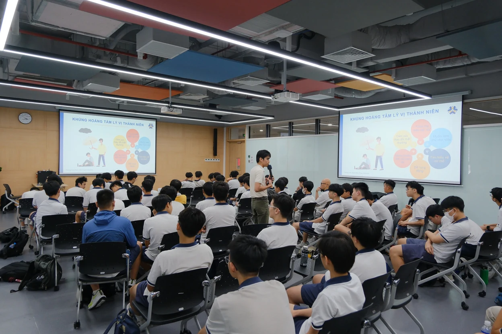
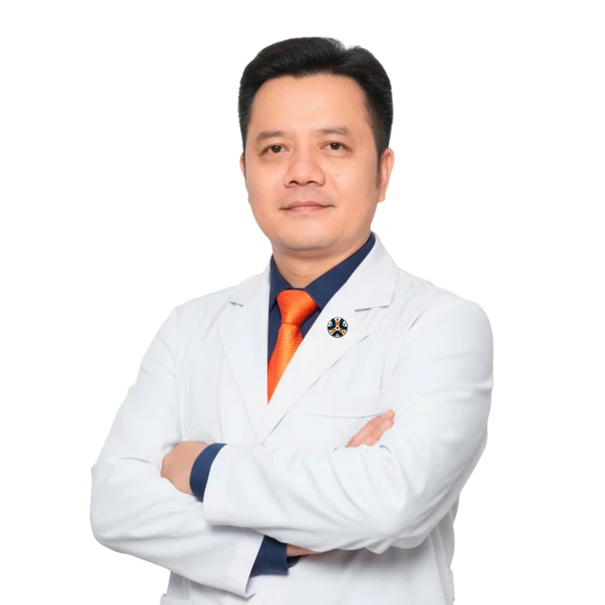
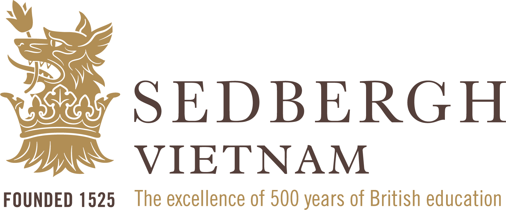
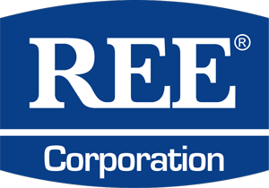
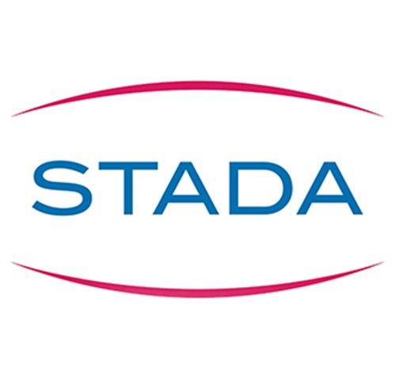
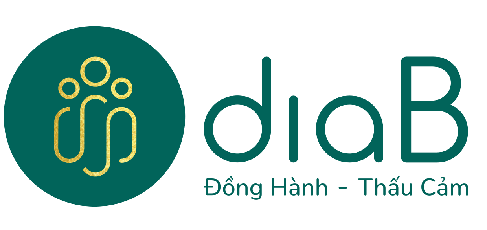
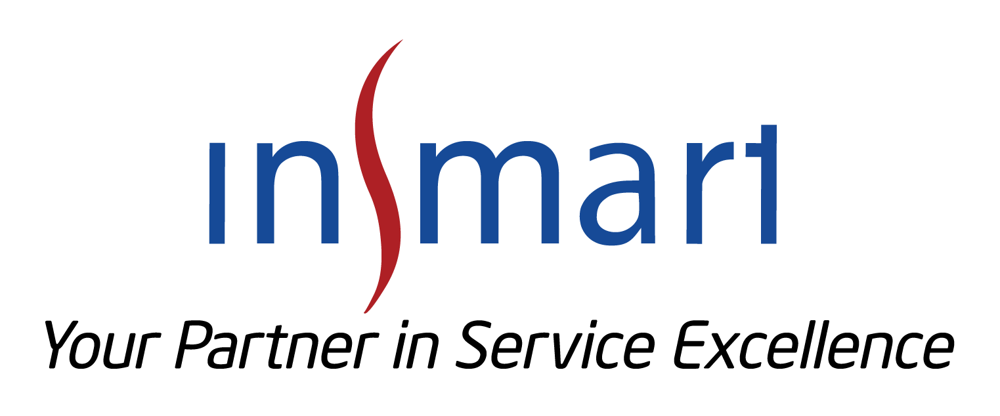

BPEC
Cấp cứu ngoại viện cơ bản
Trang bị kỹ năng hồi sinh tim phổi (CPR), sử dụng máy khử rung tim tự động (AED) và xử trí ban đầu các tình huống cấp cứu. Chương trình chú trọng thực hành và ứng dụng trong thực tế.
Tìm hiểu BPECVề GHME
GHME mang kiến thức sức khỏe và kỹ năng sơ cấp cứu đến gần hơn với cá nhân, gia đình và tổ chức. Chúng tôi đồng hành để mỗi người chủ động chăm sóc sức khỏe và tự tin hơn khi cần ứng phó với tình huống khẩn cấp.

Định hướng của GHME
Trong một tình huống khẩn cấp, sự chủ động bắt đầu từ việc biết phải làm gì. GHME tập trung vào đào tạo cấp cứu ngoại viện, giáo dục sức khỏe và các sản phẩm sơ cấp cứu để giúp cá nhân, gia đình và tổ chức sẵn sàng hơn.
Từ kỹ năng CPR và sử dụng AED đến chăm sóc sức khỏe thể chất, tinh thần và phòng ngừa bệnh tật, các giải pháp của GHME hướng đến môi trường sống, học tập và làm việc an toàn hơn.
Giải pháp từ GHME
Ba nhóm giải pháp bổ trợ nhau, gắn kiến thức và kỹ năng với nhu cầu thực tế của người học và tổ chức.
BPEC
Trang bị kỹ năng hồi sinh tim phổi (CPR), sử dụng máy khử rung tim tự động (AED) và xử trí ban đầu các tình huống cấp cứu. Chương trình chú trọng thực hành và ứng dụng trong thực tế.
Tìm hiểu BPECDoctor Talk
Các buổi đào tạo, hội thảo và chia sẻ cùng bác sĩ, chuyên gia về chăm sóc sức khỏe, phòng ngừa bệnh và an toàn cộng đồng; với nhiều chủ đề thiết thực cho nhân viên văn phòng và đội ngũ doanh nghiệp.
Khám phá Doctor TalkSản phẩm sơ cấp cứu
Máy AED Nihon Kohden cùng bộ sơ cấp cứu cá nhân, du lịch và văn phòng/gia đình giúp trang bị phương tiện hỗ trợ cần thiết cho các tình huống khẩn cấp.
Xem các sản phẩmĐiều tạo nên khác biệt
GHME kết hợp chuyên môn y khoa, chương trình phù hợp nhu cầu và phương pháp học có tính tương tác cao để đưa kiến thức đến gần với thực tế.

Đội ngũ y khoa giàu kinh nghiệm, được hỗ trợ bởi hội đồng chuyên môn.
Chương trình được điều chỉnh theo nhu cầu cụ thể của cá nhân và tổ chức, hướng đến tính phù hợp và hiệu quả.
Tăng tương tác và thực hành trực tiếp để người học có thể vận dụng kỹ năng trong các tình huống thực tế.
Sử dụng thiết bị hiện đại từ Laerdal, Nihon Kohden và các nhà cung cấp chuyên ngành.
Chương trình theo tiêu chuẩn quốc tế, hướng đến nâng cao năng lực và khả năng ứng dụng thực tế.
ĐỘI NGŨ CHUYÊN MÔN
Tìm giảng viên phù hợp với lĩnh vực bạn quan tâm.
Cố vấn y khoa
Bác sĩ, Thạc sĩ
Hồi sức tích cực
Bác sĩ chuyên khoa I
Huyết học & Truyền máu
Bác sĩ, Thạc sĩ
Hồi sức tích cực
Bác sĩ, Thạc sĩ
Y học cổ truyền
Bác sĩ, Thạc sĩ
Dinh dưỡng

Bác sĩ chuyên khoa I
Sản phụ khoa
Bác sĩ, Thạc sĩ
Y học dự phòng
Bác sĩ
Y học quân sự
Bác sĩ, Thạc sĩ
Nội khoa
Cử nhân Điều dưỡng
Cấp cứu & Chăm sóc trước viện
Bác sĩ, Thạc sĩ, Chuyên khoa II
Tâm lý học, Phục hồi chức năng
Bác sĩ chuyên khoa II
Nhãn khoa
Giám đốc Chiến lược (CSO) / Đồng sáng lập
Gần 20 năm kinh nghiệm trong lĩnh vực dược phẩm và chăm sóc sức khỏe; từng đảm nhiệm nhiều vị trí lãnh đạo tại các doanh nghiệp trong ngành.
Cố vấn y khoa
Bác sĩ, Thạc sĩ
Cố vấn y khoa · Giảng viên
Giảng viên và cố vấn học thuật tại Bộ môn Cấp cứu – Hồi sức – Chống độc, Trường Đại học Y khoa Phạm Ngọc Thạch. Giám đốc khóa học BLS, ACLS và PALS của Hiệp hội Tim mạch Hoa Kỳ (AHA).
Bác sĩ, Thạc sĩ
Giảng viên
Y học cổ truyền
Không tìm thấy chuyên gia phù hợp.
HỒ SƠ CHUYÊN MÔN
Bác sĩ, Thạc sĩ
Theo Company Profile, bác sĩ Nguyen Hong Truong là giảng viên và cố vấn học thuật tại Bộ môn Cấp cứu – Hồi sức – Chống độc, Trường Đại học Y khoa Phạm Ngọc Thạch; đồng thời là Trưởng khoa Hồi sức tích cực tại Bệnh viện Quận 11.
Ông giữ vai trò Phó Tổng thư ký Chi hội Cấp cứu – Hồi sức – Chống độc thuộc Hội Cấp cứu, Hồi sức tích cực và Chống độc Việt Nam.
Trước đó, ông phụ trách Khoa Cấp cứu tại Bệnh viện Thủ Đức và có nhiều năm kinh nghiệm điều trị người bệnh nặng tại Bệnh viện Nhân dân 115 và Bệnh viện Trưng Vương.
Bên cạnh công tác tại bệnh viện, ông là giám đốc các khóa học BLS, ACLS và PALS của Hiệp hội Tim mạch Hoa Kỳ (AHA).
Nguồn: GHME Company Profile · Trang 14, 15
HỒ SƠ CHUYÊN MÔN
Bác sĩ chuyên khoa I
Nguồn: GHME Company Profile · Trang 15
HỒ SƠ CHUYÊN MÔN
Bác sĩ, Thạc sĩ
Nguồn: GHME Company Profile · Trang 15
HỒ SƠ CHUYÊN MÔN
Bác sĩ, Thạc sĩ
Nguồn: GHME Company Profile · Trang 15
HỒ SƠ CHUYÊN MÔN
Bác sĩ, Thạc sĩ
Nguồn: GHME Company Profile · Trang 15
HỒ SƠ CHUYÊN MÔN
Bác sĩ chuyên khoa I
Nguồn: GHME Company Profile · Trang 15
HỒ SƠ CHUYÊN MÔN
Bác sĩ, Thạc sĩ
Nguồn: GHME Company Profile · Trang 15
HỒ SƠ CHUYÊN MÔN
Bác sĩ
Nguồn: GHME Company Profile · Trang 15
HỒ SƠ CHUYÊN MÔN
Bác sĩ, Thạc sĩ
Nguồn: GHME Company Profile · Trang 15
HỒ SƠ CHUYÊN MÔN
Cử nhân Điều dưỡng
Nguồn: GHME Company Profile · Trang 15
HỒ SƠ CHUYÊN MÔN
Bác sĩ, Thạc sĩ, Chuyên khoa II
Nguồn: GHME Company Profile · Trang 15
HỒ SƠ CHUYÊN MÔN
Bác sĩ chuyên khoa II
Nguồn: GHME Company Profile · Trang 15
HỒ SƠ CHUYÊN MÔN
Nguyen Hoang Linh là nhà lãnh đạo có gần 20 năm kinh nghiệm trong lĩnh vực dược phẩm và chăm sóc sức khỏe.
Ông từng giữ các vị trí: thành viên Hội đồng quản trị tại Diab; CEO và đồng sáng lập HCX COACHING; CEO và đồng sáng lập Healthcare Talent; cùng các vai trò điều hành cấp cao tại DKSH, MSG Medical Group, Kim Dental, Phano Pharmacy và IQVIA.
Company Profile nhấn mạnh tư duy chiến lược, tinh thần hợp tác và cam kết đổi mới của ông trong vai trò cố vấn và tạo giá trị cho ngành.
Nguồn: GHME Company Profile · Trang 11
HỒ SƠ CHUYÊN MÔN
Nguyen Xuan Phuong Uyen là nhà lãnh đạo kinh doanh có tư duy chiến lược và kinh nghiệm sâu rộng về nâng cao hiệu quả vận hành, triển khai hoạt động kinh doanh tại các tổ chức đa quốc gia.
Với kinh nghiệm lãnh đạo tại DKSH Việt Nam, Đại học Fulbright Việt Nam và Grundfos Việt Nam, bà đã thúc đẩy hoạt động vận hành trên toàn quốc, nâng cao hiệu quả đội ngũ tại hiện trường và triển khai các hệ thống dựa trên dữ liệu để cải thiện hiệu suất và tăng trưởng.
Company Profile ghi nhận tầm nhìn chiến lược, phong cách lãnh đạo có kỷ luật và tính chính trực của bà, hướng tới nâng cao hiệu quả tổ chức và thúc đẩy sức khỏe cộng đồng thông qua GHME.
Nguồn: GHME Company Profile · Trang 12
HỒ SƠ CHUYÊN MÔN
Bác sĩ, Tiến sĩ
Bác sĩ Le Binh Phuong là doanh nhân trong lĩnh vực chăm sóc sức khỏe, có nền tảng học thuật vững chắc và kinh nghiệm lãnh đạo sâu rộng.
Theo Company Profile, ông có chứng nhận về Cấp cứu và Hồi sức cơ bản của Trường Y, Đại học Stanford; chứng nhận cập nhật giảng viên BLS năm 2020 của Hiệp hội Tim mạch Hoa Kỳ (AHA); và được chứng nhận là giảng viên An toàn, vệ sinh lao động (OHS) tại Việt Nam.
Ông đồng sáng lập IVFMD Asia tại Singapore, được Singmedic (thành viên Clermont Group) đề cử phát triển dịch vụ y tế tại Việt Nam, và từng đảm nhiệm các vai trò điều hành cấp cao như giám đốc bệnh viện/phòng khám tại Hoan My Medical Group.
Nguồn: GHME Company Profile · Trang 13
MẠNG LƯỚI ĐỐI TÁC
Kết nối và hợp tác cùng các tổ chức, đơn vị trong lĩnh vực y tế, giáo dục và doanh nghiệp.






Cùng xây dựng môi trường an toàn hơn
Trao đổi với GHME về chương trình đào tạo, chuyên đề sức khỏe hoặc giải pháp trang bị sơ cấp cứu phù hợp.
Gửi yêu cầu tư vấn68 Nguyễn Huệ, phường Sài Gòn,
TP. Hồ Chí Minh